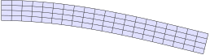
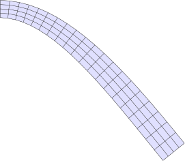
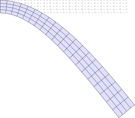
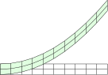

The deformed configuration
using FerriteTikzA linear elasticity problem
We solve a small cantilever under a tip load, straight out of the Ferrite tutorials, and then plot the result. Nothing here is FerriteTikz-specific yet.
grid = generate_grid(Quadrilateral, (20, 4), Vec{2}((0.0, -0.5)), Vec{2}((10.0, 0.5)))addfacetset!(grid, "clamped", x -> x[1] ≈ 0.0)addfacetset!(grid, "tip", x -> x[1] ≈ 10.0)ip = Lagrange{RefQuadrilateral, 1}()^2qr = QuadratureRule{RefQuadrilateral}(2)qr_face = FacetQuadratureRule{RefQuadrilateral}(2)cv = CellValues(qr, ip)fv = FacetValues(qr_face, ip)dh = DofHandler(grid)add!(dh, :u, ip)close!(dh)ch = ConstraintHandler(dh)add!(ch, Dirichlet(:u, getfacetset(grid, "clamped"), (x, t) -> [0.0, 0.0], [1, 2]))close!(ch)E, ν = 200.0e3, 0.3λ = E * ν / ((1 + ν) * (1 - 2ν))μ = E / (2 * (1 + ν))δ(i, j) = i == j ? 1.0 : 0.0C = SymmetricTensor{4, 2}((i, j, k, l) -> λ * δ(i, j) * δ(k, l) + μ * (δ(i, k) * δ(j, l) + δ(i, l) * δ(j, k)))K = allocate_matrix(dh)f = zeros(ndofs(dh))assembler = start_assemble(K, f)ke = zeros(ndofs_per_cell(dh), ndofs_per_cell(dh))fe = zeros(ndofs_per_cell(dh))for cell in CellIterator(dh) fill!(ke, 0) fill!(fe, 0) reinit!(cv, cell) for qp in 1:getnquadpoints(cv) dΩ = getdetJdV(cv, qp) for i in 1:getnbasefunctions(cv) ∇δu = shape_symmetric_gradient(cv, qp, i) for j in 1:getnbasefunctions(cv) ∇u = shape_symmetric_gradient(cv, qp, j) ke[i, j] += (∇δu ⊡ C ⊡ ∇u) * dΩ end end end # tip traction for facet in 1:nfacets(getcells(grid, cellid(cell))) if FacetIndex(cellid(cell), facet) in getfacetset(grid, "tip") reinit!(fv, cell, facet) for qp in 1:getnquadpoints(fv) dΓ = getdetJdV(fv, qp) for i in 1:getnbasefunctions(fv) fe[i] += (shape_value(fv, qp, i) ⋅ Vec{2}((0.0, -100.0))) * dΓ end end end end assemble!(assembler, celldofs(cell), ke, fe)endapply!(K, f, ch)u = K \ fPlotting it
Hand the DofHandler and the solution vector to tikzgrid. The nodal displacements are extracted with Ferrite.evaluate_at_grid_nodes, so the field may live on any interpolation:
tikzgrid(dh, u; field = :u, scale = 1.0, cellcolor = "blue!12", picturescale = 0.9)
scale magnifies the displacement — the coordinates themselves are not scaled, so the picture keeps its physical size:
tikzgrid(dh, u; scale = 5.0, cellcolor = "blue!12", picturescale = 0.9)
Overlaying the reference configuration
reference draws the undeformed grid underneath the deformed one. Give it the style it should be drawn in; everything not set explicitly is inherited from the main style, except that the reference configuration is never filled and carries no labels:
tikzgrid( dh, u; scale = 5.0, cellcolor = "blue!12", reference = (linecolor = "gray", linestyle = "dashed"), picturescale = 0.9,)
Pass reference = true to use the inherited style unchanged, and reference = nothing (the default) to draw the deformed configuration alone.
Passing displacements directly
A DofHandler is not required. Nodal displacements can be handed over as a Vector{Vec{2}} of length getnnodes(grid), or as a flat Vector{<:Real} of length 2 * getnnodes(grid) laid out as [u1x, u1y, u2x, u2y, …]:
grid2 = generate_grid(Quadrilateral, (10, 2), Vec{2}((0.0, -0.2)), Vec{2}((4.0, 0.2)))ud = [Vec{2}((0.0, 0.15 * x[1]^2)) for x in Ferrite.get_node_coordinate.((grid2,), 1:getnnodes(grid2))]tikzgrid(grid2, ud; scale = 1.0, cellcolor = "green!12", reference = true, picturescale = 1.2)
deformedcoordinates and nodedisplacements expose the same conversion if you want the coordinates for something else.